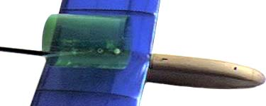
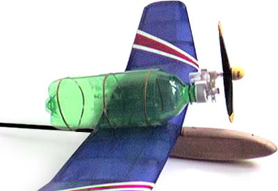

|  Recently I have been experimenting with compressed air motors for Free Flight, and was intrigued to try one with R/C. As a quick and dirty test, I whipped up this powerpod with an AirHog motor mated to a 1 liter bottle. The mounting sleeve (at right) is captured by the wing hold down bolt. | |||||||||
|  Here we see the entire assembly attached and ready to go. I used rubberbands for mounting as the "tank" expands noticably with the comressed air, and tape would have failed. Note that no effort was made to fine tune the thrustline. It was determined by prop clearance on the fuselage hatch and resulted in a bunch of up thrust. The rearmost rubber band wraps around the tailboom and is responsible for keeping the pod from tipping forward or swinging side to side. | |||||||||
| |||||||||
|---|---|---|---|---|---|---|---|---|---|
|
With 120 psi, the model climbs out smartly to perhaps 150 feet, with still air flight durations of about 90 secs. This was as expected. The original bottle with about 330 ml capacity seems to fly models for 30 seconds on average. A more carefully designed configuration should result in additional duration. Enclosing the powerplant within a fuselage would be successful as well. In fact, there are at least two new compressed air scale models being built by Marin Aero Club members. I also have a few potential models in mind... |
Copyright 1999, Thayer Syme. All rights reserved